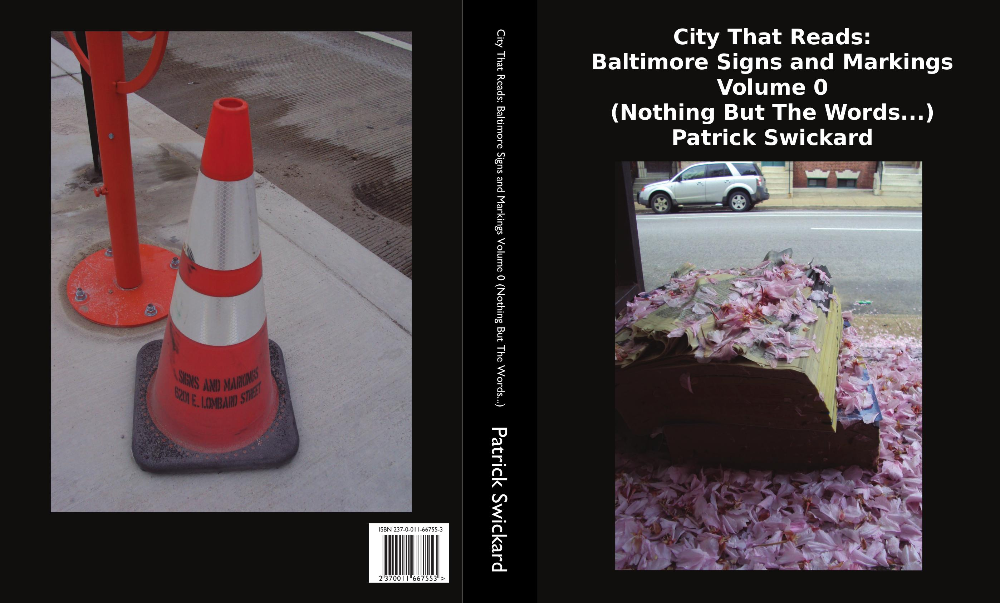

City That Reads: Baltimore Signs and Markings Volume 00 (Nothing But The Words)
8.5"x11" paperback, 694 pages
This is one of two index volumes for the project. This volume contains all the captions from my photos, arranged in chronological order--roughly one per line. Nearly 700 pages of nothing but photo captions with no photos besides the front and rear covers.
This volume is arranged by photo albums. Each album represents a walk I took around the city on that particular day taking photos. Each album contains a link (QR code) to the album from my Flickr account corresponding to that walk, and the captions of the photos are based mostly on the text of the photos that I took on that walk (where relevant) or a short description of what is in the photo. Due to the nature of the project, of course, most are the words that I was reading while walking around on that particular day.
This volume was a way of condensing my 30,000+ photos into a mere 700 pages of text. For me, the experience of reading and recording all the signs and posters and graffiti I saw on that walk realizes the sort of "stream-of-consciousness"experience one gets by walking around the city and looking at words. When I walk around a city, my eye is usually drawn to images and text. This is the whole reason the ad industry exists. Walk or drive anywhere and you'll see hundreds of ads meant to sell you something or make you feel a certain way. (You'll even get this experience staying where you are and staring at a phone or computer screen, but without the benefit of exercise...) With graffiti and posters this experience is a little bit more organic and provided to you courtesy of your fellow citizens and beloved (or despised) local merchants.
The words in the pictures are the reason this project exists in the first place. Baltimore is "the city that reads" and this is quite literally your experience when you walk around the city as a pedestrian in particular. Every word you read on the street is a little hook in your brain. And these change a bit every day, even if you stick to the same routes and routines. Old texts fade, and new texts replace the old.
Part of the intent of this project was to archive the ephemeral words and images from the streets of Baltimore. From a "serious" standpoint, recording the words themselves as text preserves the data and makes it searchable. But there's also an artistic intent behind this. Presented in this context with words only, each album functions like a little poem full of found text. I'd encourage the reader to read these captions aloud and think about what images they might conjure in your brain--a reverse journey from the process I took to make them. Or read them aloud and simply let your brain free-associate and see what thoughts and feelings these mundane-but-magical words might draw from within you.
Most of the images from my project represent the ephemeral. If you go to the same spot where the photo was taken, things will look different now. Graffiti gets scrubbed. Stickers fade or are removed. Posters fall off or get taken down. For now (and the foreseeable future) the QR codes in the book will link you to where you can find the corresponding full-res images that go with the captions. But as with all technological artifacts, even these will someday be lost as websites die or technology moves on to the next big thing. All that will remain will be the words. And if this printed volume outlives the photos, it will go from being a mere index to being a collection of gravestones for lost images.
This 700 page tome makes a great coffee table book, or doorstop, or whatever other kinds of uses you might think of for a large, semi-attractive object made of paper. Pester me for a copy today.
For data nerds, I am also making freely available a text file which contains all my captions in alphabetical order with sections by date. This is actually fairly useful for tracking down such information as which dates a particular caption may have appeared. With a little bit of tweaking, there's all kinds of interesting analysis you can do on this file...